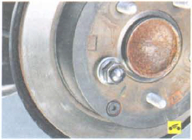

При наличии на рабочей поверхности диска задиров, глубоких рисок и других дефектов, увеличивающих износ колодок и уменьшающих эффективность торможения, а также в случае повышенного бокового биения диска, вызывающего вибрации при торможении, замените диск.
Минимально допустимая толщина тормозного диска - 8,4 мм. Если толщина одного из дисков меньше указанного значения, замените оба диска. При замене тормозных дисков обязательно замените тормозные колодки новым комплектом.
1. Снимите колесо со стороны заменяемого диска.
2. Выверните направляющие пальцы тормозного суппорта и отсоедините суппорт от продольного рычага подвески.
3. Привяжите тормозной суппорт проволокой к пружине, чтобы удержать его от падения...
4. ...и снимите тормозной диск.
Если снять тормозной диск руками не удается, спрессуйте его со ступицы, аккуратно нанося удары по обратной стороне диска через деревянную проставку.
 Для предотвращения падения диска навинтите гайку на одну из шпилек крепления колеса.
5. Установите тормозной диск в порядке, обратном снятию.
Примечание: Перед установкой диска тщательно очистите привалочные поверхности ступицы и диска от ржавчины и окалины, так как даже мельчайшая частица, зажатая между привалочными поверхностями, вызовет биение диска и вибрации при торможении.
Полезный совет: Если устанавливаете прежний диск, удалите напильником буртики на рабочих поверхностях диска, образовавшиеся с обеих его сторон в результате износа.